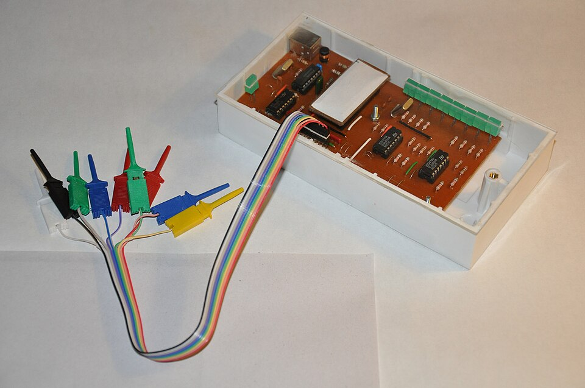

Logic thresholds, hysteresis and signal timing
Read a logic data sheet to explain noise margin, input thresholds, debounce, probe loading and edge detection.
Separate the voltage from the interpretation
Logic inputs accept defined voltage ranges. Compare driver VOH(min) and VOL(max) with receiver requirements under the specified supply, current and temperature. A guaranteed high noise margin is VOH(min) − VIH(min), and the low margin is VIL(max) − VOL(max). Negative margin means the chosen combination lacks a guarantee. Check input voltage tolerance if one side remains powered while the other is off.

Photo by Dilshan Jayakody, with on-page callouts. Original photo · CC BY-SA 2.0.
.jpg){kind=link}

Photo by Severino666, with on-page callouts. Original photo · Public domain.

Tektronix shows how the probe response changes an observed edge.
Follow an edge in time
A Schmitt input crosses an upper threshold on a rising input and a lower threshold on a falling input. The gap resists chatter when noise is smaller than the margin at that moment. An RC filter trades noise attenuation for delay, and the timing depends on which threshold is crossed. In a first-order charge from zero toward 5 V, crossing 3 V takes approximately 0.92 time constants. Compare the data-sheet limits and the actual charge curve.
A scope shows edge shape. A logic analyser represents voltage events in time after thresholding and sampling. Practise with P110 · See a bouncing switch and clean up a digital edge, then combine sensor, filter and threshold in P124 · Commission a complete low-voltage sensor and alarm.